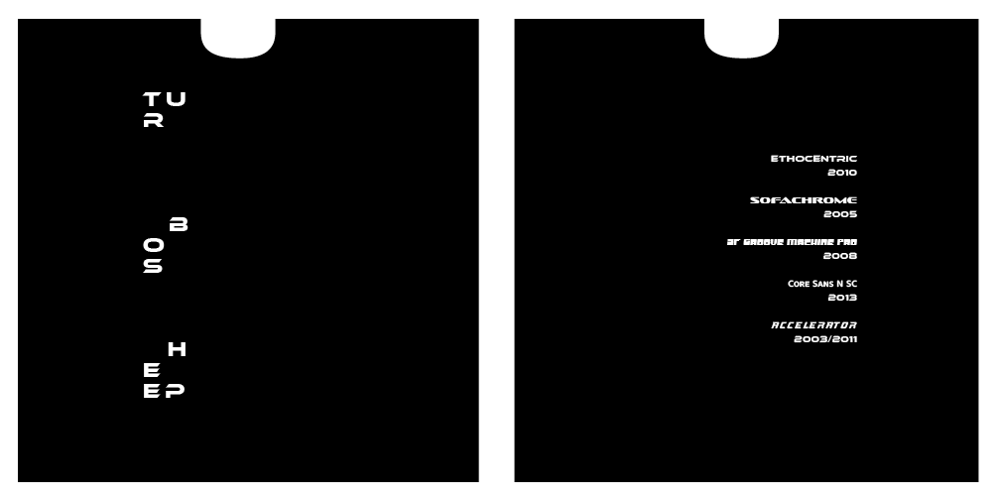

When coming up with the design for turbo sheep, I started out with messing with different shapes and text until I decided to just drop the idea in total. I then spent time staring at a screen wondering what I could do. Thats when I made a space invader based design of my little turbo sheep attack the text on the other half of the record sleeve and from there I slowly simplified it until it was the text of turbo sheep separated and fragmented. While on the back half of the record sleeve, the type became smaller and also changed to each of the fallback type that I could find.
